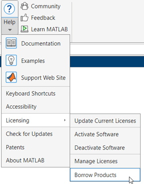
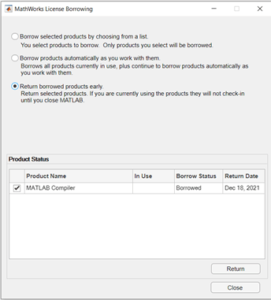

Borrow Licenses
License Borrowing Overview
To provide license mobility, MathWorks® supports license borrowing.
This capability lets you use MathWorks products on computers that do not have a continuous connection to the license server.
After you borrow a license, you can disconnect your computer from the network and continue to use the products you have checked out until the borrow period expires.
You can also return a borrowed license early.
Commercial Concurrent and Network Named User licenses can use license borrowing.
The maximum borrow period is 30 days (720 hours).
MathWorks products must be installed on client computers where the borrowed license will be used.
Note
Campus-Wide licenses, including Concurrent licenses, cannot use license borrowing.
Enable License Borrowing
You must be an Administrator of the license to enable license borrowing.
Request that borrowing be enabled on your license from MathWorks. To request this change, contact support.
Notes
In license files with borrowing, the
INCREMENTlines for products include the keywordBORROW=720, where720is the maximum number of hours in the borrow period (you cannot change this value). For example:INCREMENT MATLAB MLM 17 30-jan-2025 5 52FCH63184G5 BORROW=720 \ DUP_GROUP=UH SN=220668The maximum borrow period of 720 hours is equal to 30 days.
After your license is enabled for borrowing, you will download a new license file.
On your license server, stop the network license manager.
On your license server, copy the
SERVERandDAEMONlines from the existing license file,matlabroot/etc/license.dat, wherematlabrootrepresents your MATLAB® installation folder. For example, here are theSERVERandDAEMONlines from a license file:SERVER mysystem 0012110gbc86 27000 DAEMON MLM C:\Program Files\MATLAB\R2025b\etc\win64\MLM.exePaste the
SERVERandDAEMONlines that you copied from your existing license file at the top of the new license file that includes the license borrowing capability.On your license server, replace the existing license file with the new license file.
Restart the network license manager.
Turn on Borrow Products Menu Option
Note
Ensure that the client computer has a network connection to the license server.
To turn on the menu option for Borrow Products in the Licensing menu:
On the client computer, start MATLAB and enter this command:
matlab.internal.licensing.enableBorrowUI(true)
After you turn on the menu option for License Borrowing the first time, it remains available any time you start MATLAB.
Restart MATLAB.
Locate the Borrow Products option in the Licensing menu.
On the Home tab, in the Resources section, click Help.
Under Licensing, look for Borrow Products.

Borrow Product Licenses by Selecting Products
To borrow licenses by product name:
Start MATLAB.
On the Home tab, in the Resources section, click Help.
Under Licensing, click Borrow Products.
Select Borrow selected products by choosing from a list. The dialog box displays the products that can be borrowed.
Specify the borrow period: from 1 day (default) to 30 days.
Click the check box next to each product that you want to borrow.
Click Borrow.
Close MATLAB.
Disconnect your computer from the network.
When you reopen MATLAB, your borrowed products can be used away from your network.
Continue using the borrowed products until the borrow period expires. If you reconnect to your network before the end of the borrowing period, see Return Borrowed Licenses Early.
Borrow Product Licenses Automatically
To borrow product licenses automatically:
Start MATLAB.
On the Home tab, in the Resources section, click Help.
Under Licensing, click Borrow Products.
Select Borrow products automatically as you work with them.
Specify the borrow period: from 1 day (default) to 30 days.
Click Turn On Auto Borrow.
Work in MATLAB as you would normally, performing the tasks you want to perform when you are disconnected from the network. As you use products, MATLAB borrows the licenses for them automatically.
When you have finished working with all the products you want to borrow, click Turn Off Auto Borrow.
Close MATLAB.
Disconnect your computer from the network.
When you reopen MATLAB, your borrowed products can be used away from your network.
Continue using the borrowed products until the borrow period expires. If you reconnect to your network before the end of the borrowing period, see Return Borrowed Licenses Early in the next section.
Return Borrowed Licenses Early
To return a borrowed license early:
Connect your computer to your network.
On the Home tab, in the Resources section, click Help.
Under Licensing, click Borrow Products.

Select Return borrowed products early. The dialog box displays a list of currently borrowed products.
Specify the product licenses you want to return early. By default, all borrowed product licenses are selected. Deselect any products you do not want to return.
Click Return.
Note
You cannot borrow licenses and then return them in the same MATLAB session. You must quit MATLAB and restart it before you can return the licenses.
Manage License Borrowing
Use an options file to control license borrowing behavior. Use the network license manager tools to monitor which licenses are borrowed.
Determine Which Licenses Are Currently Borrowed
The network licensing manager provides tools that you can use to monitor the status of
borrowed licenses in your network configuration. You can use the LMTOOLS application or the
lmstat command.
Use LMTOOLS Application on Windows Systems
Log in to your license server.
Navigate to the
matlabroot\etc\win64matlabrootStart the LMTOOLS application by double-clicking the
lmtools.exeexecutable file.Select the Server Status tab in the LMTOOLS dialog box.
Click the Perform Status Enquiry button. LMTOOLS displays the status information in the output window. In the status information, each entry in the list for a product shows the total number of licenses for the product and tells how many licenses are currently checked out. For borrowed licenses, the entry for the product includes the keyword (
linger:XXX), whereXXXspecifies the borrow period in seconds.lmutil - Copyright (c) 1989-2018 Flexera. All Rights Reserved. Flexible License Manager status on Thu 12/9/2021 15:43 [Detecting lmgrd processes...] License server status: 27000@myserver License file(s) on myserver: C:\Program Files\MATLAB\R2025b\etc\license.dat: myserver: license server UP (MASTER)inclusivetermexception v11.16.2 Vendor daemon status (on myserver): MLM: UP v11.16.2 Feature usage info: Users of MATLAB: (Total of 13 licenses issued; Total of 1 license in use) "MATLAB" v46, vendor: MLM, expiry: 30-jan-2025 vendor_string: vi=0:at=200:ae=1:lu=300:lo=CN:ei=1234567:lr=1:ep=0: floating license juser myserver DESKTOP-4SPTFG0 (v45) (myserver/27000 102), start Thu 12/9 15:41 Users of SIMULINK: (Total of 1 license issued; Total of 0 licenses in use) Users of Compiler: (Total of 1 license issued; Total of 1 license in use) "Compiler" v46, vendor: MLM, expiry: 30-jan-2025 vendor_string: vi=0:at=200:ae=1:lu=300:lo=CN:ei=1234567:lr=1:ep=0: floating license juser myserver DESKTOP-4SPTFG0 (v45) (myserver/27000 201), start Thu 12/9 15:43 (linger: 807316 / 807360)Note
MATLAB Compiler™: License status information may contain
lingereven when MATLAB Compiler is not being borrowed.
Use lmstat Utility on Windows Systems
Log in to your license server and open a DOS command window. One way to open the DOS command window is to select the Run option from the Start menu, type
cmdin the text entry field, and then click OK.Navigate to the
matlabroot\etc\$ARCHmatlabroot$ARCHrepresents a platform-specific folder.Run the
lmutilcommand specifyinglmstatas an argument. (On Windows® computers, FlexNet® packages all its license management utilities into one program,lmutil.)The following example uses the
-aoption to display all the information returned bylmstat. Note that you must also use the-coption to specify the name of your license file. For more information aboutlmstat, see the FlexNet End User’s Guide.lmutil lmstat -a -c "C:\Program Files\MATLAB\R2025b\etc\license.dat"
In the status information returned by lmstat, each entry in the list
for a product shows the total number of licenses for the product and tells how many licenses
are currently checked out. For borrowed licenses, the entry for the product includes the
keyword (linger:XXX), where XXX specifies the borrow
period in seconds.
"Control_Toolbox" v46, vendor: MLM
floating license
carlostessier lm-server lm-server (v46) (lm-server/27000 201), start Fri 12/17 14:37
(linger: 121500)Note
MATLAB
Compiler: License status information may contain linger even when
MATLAB
Compiler is not being borrowed.
Use lmstat on Linux Systems
Log in to your license server.
Navigate to the
matlabroot/etcmatlabrootis your MATLAB installation folder.Run the
lmstatutility.lmstat -a -c /usr/local/MATLAB/R2025b/etc/license.dat
Control License Borrowing with Options Files
You can control various aspects of license borrowing behavior using an options file for the network license manager. An options file is a text file that contains option statements. Each option statement begins with a keyword that identifies the option. The following table lists the options you use to control aspects of license borrowing. For more information about these options, see the FlexNet End User’s Guide. To see an example of an options file, see the example in the next topic.
| Task | Option to Specify |
|---|---|
Reserve a specific number of licenses that cannot be borrowed. | Use the For example, to make sure that three MATLAB licenses can never be borrowed, use this syntax:
|
Specify which users can borrow licenses for a particular product. | Use the For example, to allow the user Fred to borrow a license for the Image Processing Toolbox™, use this syntax:
Note: When you specify that a particular user can borrow licenses, you exclude all other users. |
Specify which users cannot borrow licenses for a particular product. | Use the For example, to prevent the user Donna from borrowing a license for the Image Processing Toolbox, use this syntax:
|
Specify the maximum amount of time a user can borrow a license. | Use the For example, to limit users of the Image Processing Toolbox to a three day borrow period, use this syntax:
The borrow period you specify must be less than 30 days, which is the borrow period specified in borrow-enabled licenses from MathWorks. |
Example: Exclude a User from Borrowing a License
To illustrate using an options file to control license borrowing behavior, this example uses an options file to exclude a user from borrowing a license for a specific product:
Create the options file.
An options file is a text file that contains options statements. Using any text editor, create a file that contains the following line. You can give the options file any name and store it in any convenient folder.
EXCLUDE_BORROW SIMULINK USER fredSpecify the name of the options file on the
DAEMONline in your license file.On your license server, use any simple text editor to edit your license file, adding the
options=keyword to theDAEMONline, as follows. Be sure to use the line continuation character (\) if theDAEMONline extends beyond a single line.DAEMON MLM C:\Program Files\MATLAB\R2025b\etc\win64\MLM.exe \ options=C:\myborrowoptions.optStart (or restart) the network license manager so that it processes the options file.
After setting up this options file, test it:
Log in as the user Fred.
Start MATLAB.
Use the Borrow Products menu to select Simulink® for borrowing.
You should get the following error:
License Manager Error -38. User/host on EXCLUDE list for feature Feature: SIMULINK License path: C:\Program Files\MATLAB\bin\win64\license.dat; C:\Program Files\MATLAB\bin\win64\*.lic